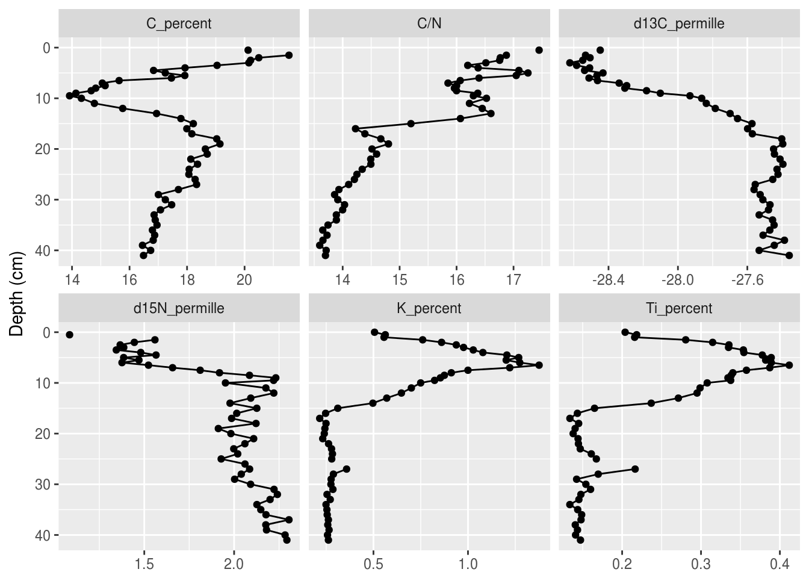
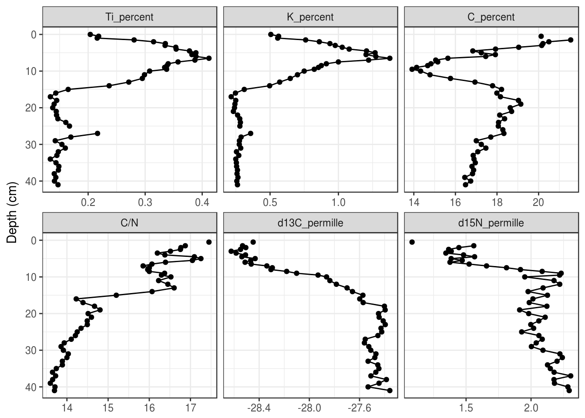
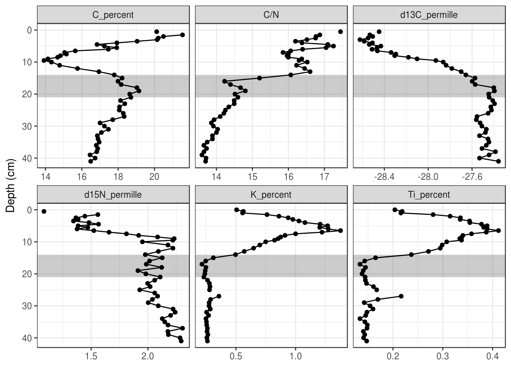
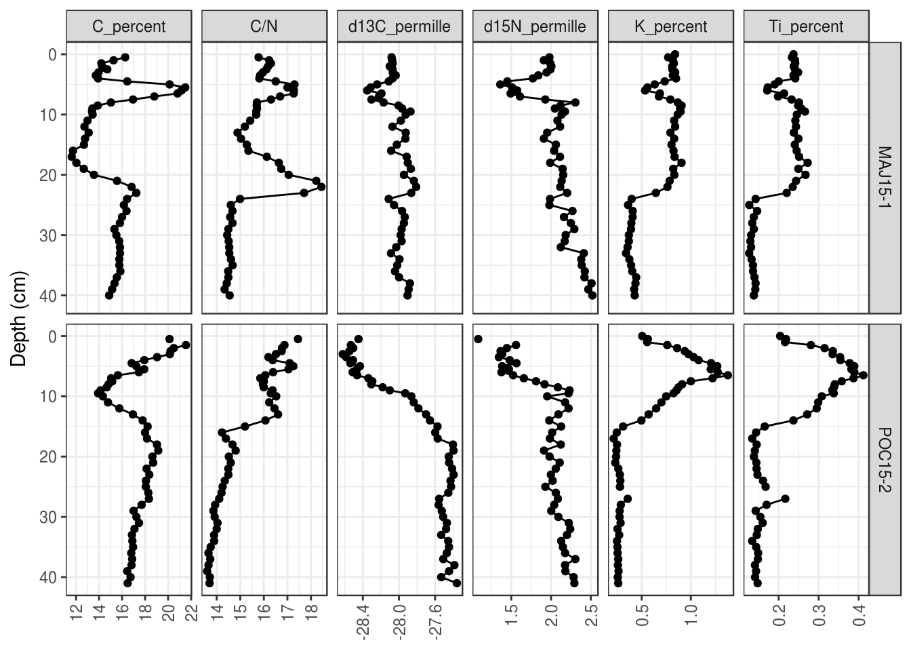
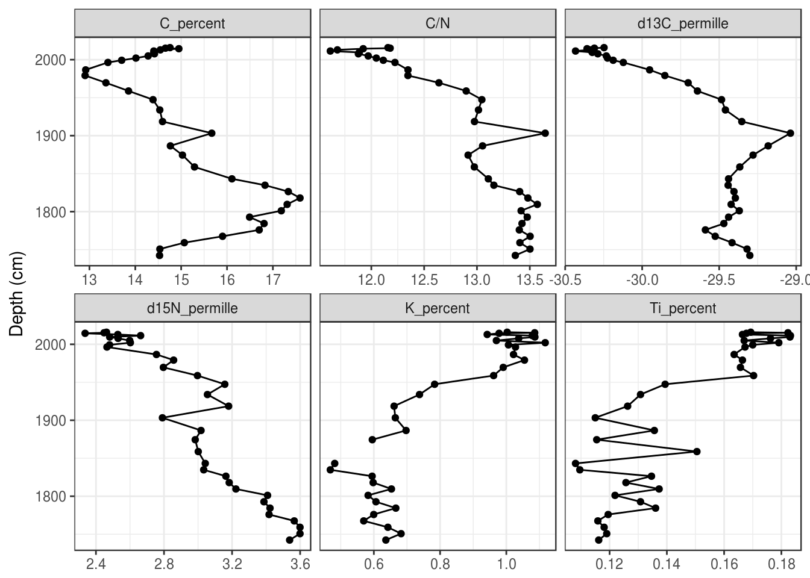
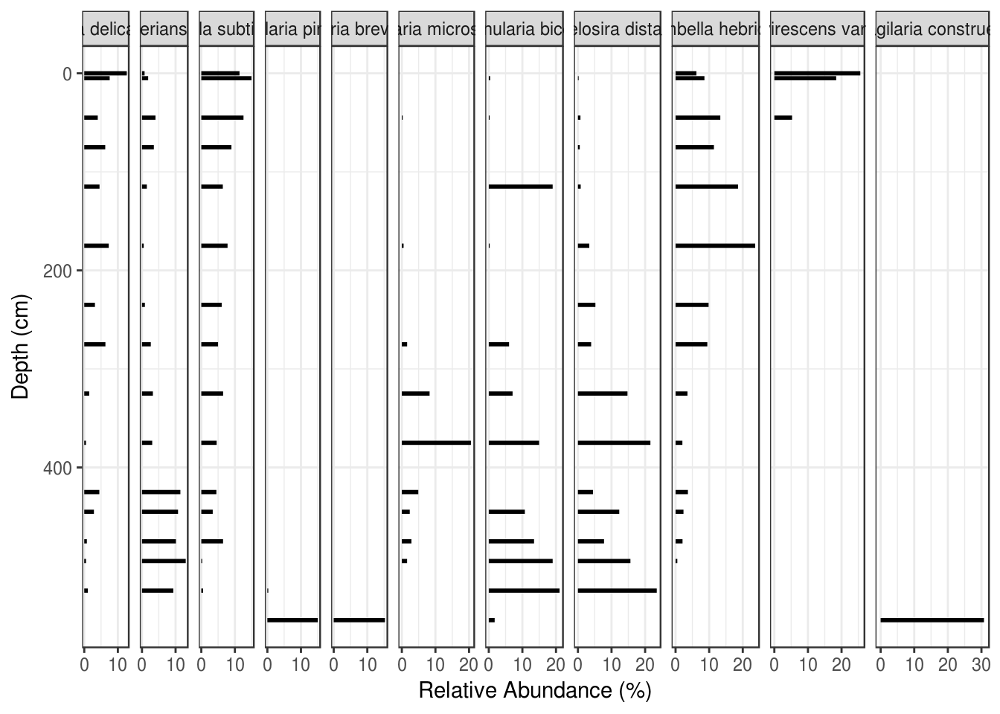

Tutorial 5 Creating Stratigraphic Diagrams
Creating beautiful stratigraphic diagrams is difficult in any program, and while it is not necessarily easier to create beautiful digrams in R the first time, R becomes useful when the data used to create the graph get updated, requiring you to re-make the plot. In the course of a thesis, one can re-make a figure many, many times with various modifications. Learning to create publication-ready stratigraphic plots in R is a front-end investment of time that becomes useful after the first few rounds of revisions. This tutorial is designed to give you the tools to make such diagrams with your own data.
5.1 Prerequisites
The prerequisites for this tutorial are the tidyverse package, the gridExtra package, and the analogue package. If you haven’t installed the analogue or gridExtra packages yet, you’ll have to install them using install.packages().
Load the tidyverse when you’re done! We will load the other packages when we use functions that require them below.
Finally, you will need to obtain the example data. In this tutorial, we will use the Lake Arnold diatom counts tidy CSV version of the data (Whitehead et al. 1989), and the Halifax geochemistry data. If you have these files downloaded you can load them yourself (see Tutorial 4), or you can copy/paste the following code to load the two datasets.
5.2 Workflow
It’s worth mentioning a bit about how one might go about integrating R into one’s figure-creating workflow. I suggest creating a file (something like create_figures.R) that loads the data, creates the figures, and saves the figures, within an RStudio project that also contains the data files. Keeping the data needed to create the figures and the script used to create the figures close means that you can reproduce the figure if you need to change the script (or change the data!), and using an RStudio project means you can move the folder around your computer (or to somebody else’s computer) and your scripts won’t change. I usually have an RStudio project with a subdirectory for data-raw (the data from the instrument/tech/emailed from other lab), data (the user-modified version of the files in data-raw that are R-friendly), and figures (the R-generated figures).
5.3 General stratigraphic diagrams
Stratigraphic diagrams are at heart, a set of plots that share a Y axis. The Y-axis represents time, which can be expressed as depth or as some unit of actual time (e.g., AD 2018, or 1200 years BP), and the X-axis is the value of each parameter. We will use the ggplot2 package to create these graphics for non-species data, and the analogue package to create the graphics for species composition data.
5.3.1 Data preparation
Getting your data in a form that is usable by the plotting function is most of the battle to creating a figure. In the case of ggplot(), we need the data to be in a “parameter-long” form, with one row for each measurement (each point on the graph). In Tutorial 4 we learned how to use gather() to turn a “parameter-wide” data frame into a “parameter-long” data frame. We are mostly going to focus on plotting the Pockwock Lake core, so we will also filter the data to include only one core for now.
halifax_geochem_meas <- halifax_geochem %>%
filter(core_id == "POC15-2") %>%
gather(key = param, value = value, -core_id, -depth_cm, -age_ad)
halifax_geochem_meas## # A tibble: 312 x 5
## core_id depth_cm age_ad param value
## <chr> <dbl> <dbl> <chr> <dbl>
## 1 POC15-2 0 2016. C_percent NA
## 2 POC15-2 0.5 2015. C_percent 20.1
## 3 POC15-2 1 2014. C_percent NA
## 4 POC15-2 1.5 2013. C_percent 21.5
## 5 POC15-2 2 2011. C_percent 20.5
## 6 POC15-2 2.5 2009. C_percent 20.2
## 7 POC15-2 3 2006. C_percent 20.1
## 8 POC15-2 3.5 2003. C_percent 19.0
## 9 POC15-2 4 2000. C_percent 17.9
## 10 POC15-2 4.5 1997. C_percent 16.8
## # ... with 302 more rows5.3.2 Plotting a single core
Plotting a single core with ggplot() involves several steps:
- The initial
ggplot()call, where we set which columns will get mapped to thexandyvalues for each layer. - Two layers:
geom_path()andgeom_point()(we don’t usegeom_line()because it was written by non-paleolimnologists and connects the line in odd ways) - Specify how data are divided between facets using
facet_wrap(). We need the scales to be free on the X-axis because each parameter has a different range of values, however the Y-axis should be the same for all facets. - Reverse the Y-axis, so that a depth of 0 is at the top.
- Remove the X label, and set the Y label to “Depth (cm)”.
halifax_geochem_meas %>%
ggplot(aes(y = depth_cm, x = value)) +
geom_path() +
geom_point() +
facet_wrap(~param, scales = "free_x") +
scale_y_reverse() +
labs(x = NULL, y = "Depth (cm)")
5.3.3 Changing the colours
The default colour scheme in ggplot2 is great for the web, but not so much for publication. I usually use theme_bw(), which is the black-and-white version of the default theme. There are several others, including theme_minimal(), theme_classic(), theme_linedraw(), and many more. You can add them to the end of your plot like so:
halifax_geochem_meas %>%
ggplot(aes(y = depth_cm, x = value)) +
geom_path() +
geom_point() +
facet_wrap(~param, scales = "free_x") +
scale_y_reverse() +
labs(x = NULL, y = "Depth (cm)") +
theme_bw()
Alternatively, you can use the following line to set your theme for the rest of your R session! I usually set the theme to theme_bw() right under my call to library(tidyverse) in a script.
5.3.4 Facet configuration
The facet_wrap() function has nrow and ncol arguments that allow customization of how facets are laid out. Sometimes changing the figure size is also helpful, which can be done when the figure is exported using ggsave(). In general, you should only set one of nrow or ncol.
halifax_geochem_meas %>%
ggplot(aes(y = depth_cm, x = value)) +
geom_path() +
geom_point() +
facet_wrap(~param, scales = "free_x", ncol = 4) +
scale_y_reverse() +
labs(x = NULL, y = "Depth (cm)")
5.3.5 Reordering facets
To control the orderering of the facets, we need to turn the param column into a factor(), which is kind of like a “multiple choice” vector that stores the order of its choices. We first need to create a character vector that defines the order, use mutate() to create a new column containing the facet label as a factor, then make facet_wrap() use that column to create the facets instead of param.
facet_order <- c(
"Ti_percent", "K_percent",
"C_percent", "C/N",
"d13C_permille", "d15N_permille"
)
halifax_geochem_meas %>%
mutate(facet = factor(param, levels = facet_order)) %>%
ggplot(aes(y = depth_cm, x = value)) +
geom_path() +
geom_point() +
facet_wrap(~facet, scales = "free_x") +
scale_y_reverse() +
labs(x = NULL, y = "Depth (cm)")
5.3.6 Relabeling facets
When using facet_wrap(), ggplot2 uses the value of each unique value in a column to create the label. This means that we need to rename each item to a suitable label prior to feeding it in to ggplot(). I think the easiest way to do this is fct_recode(), because it also keeps the order of the input (if you’ve already set the input to be a factor()), and you only have to rename the values that need renaming. (Note: I’ve use the unicode superscript 1-9 characters to get the superscript effect, because the other way is much harder. You can copy and paste these, or google superscript 1 unicode).
halifax_geochem_meas %>%
mutate(facet_label = fct_recode(
param,
"Ti (%)" = "Ti_percent",
"K (%)" = "K_percent",
"C (%)" = "C_percent",
"δ¹³C (‰)" = "d13C_permille",
"δ¹⁵N (‰)" = "d15N_permille"
)) %>%
ggplot(aes(y = depth_cm, x = value)) +
geom_path() +
geom_point() +
facet_wrap(~facet_label, scales = "free_x") +
scale_y_reverse() +
labs(x = NULL, y = "Depth (cm)")If the unicode superscript effect doesn’t work on your computer (it doesn’t work for \(\delta^{15}\text{N}\)) on my computer), you will have to resort to plotmath. This is a custom way R invented to render complex formatting, and you can use it with ggplot2 in various ways. The best way to implement this to start is to copy and paste, and check out ?plotmath if you’re curious what the syntax is. The key is to relabel the facets to very specific looking text (if in doubt, surround everything in single quotes like this: 'C/N'), and then use labeller = label_parsed within facet_wrap() (also works in facet_grid()).
halifax_geochem_meas %>%
mutate(facet_label = fct_recode(
param,
"'Ti (%)'" = "Ti_percent",
"'K (%)'" = "K_percent",
"'C (%)'" = "C_percent",
"delta ^ 13 * C" = "d13C_permille",
"delta ^ 15 * N" = "d15N_permille",
"'C/N'" = "C/N"
)) %>%
ggplot(aes(y = depth_cm, x = value)) +
geom_path() +
geom_point() +
facet_wrap(~facet_label, scales = "free_x", labeller = label_parsed) +
scale_y_reverse() +
labs(x = NULL, y = "Depth (cm)")5.3.7 Adding annotations
In general, adding text to the plot is difficult and not advisable. Adding horizontal lines and rectangles to highlight a particular region of the plot is much easier, and I have rarely had to resort to adding actual text to a plot using ggplot2. If this is critical to your application, you can use ggsave() to export a .svg file or .pdf file, and import it into your favourite vector drawing program (I happen to like Inkscape).
Horizontal lines can be added using geom_hline(). When using the yintercept argument, a horizontal line will be drawn on all panels.
halifax_geochem_meas %>%
ggplot(aes(y = depth_cm, x = value)) +
geom_hline(yintercept = c(7, 14, 21), alpha = 0.7, lty = 2) +
geom_path() +
geom_point() +
facet_wrap(~param, scales = "free_x") +
scale_y_reverse() +
labs(x = NULL, y = "Depth (cm)")To only draw on some panels, you will need to create a tibble with a column that specifies the facet. A small example:
hline_data <- tibble(
param = "C/N",
depth = 14
)
halifax_geochem_meas %>%
ggplot(aes(y = depth_cm, x = value)) +
geom_hline(
aes(yintercept = depth), data = hline_data,
lty = 2, alpha = 0.7
) +
geom_path() +
geom_point() +
facet_wrap(~param, scales = "free_x") +
scale_y_reverse() +
labs(x = NULL, y = "Depth (cm)")Rectangles can also be useful to draw in the background to highlight a range of depths. Rectangles also require tibble that specifies their appearance, which can contain the facet variable if the rectangle should only be drawn on some facets. Using xmin = -Inf and xmax = Inf ensures that the rectangles touch the edge of each facet.
rect_data <- tibble(
max_depth = 21,
min_depth = 14
)
halifax_geochem_meas %>%
ggplot(aes(y = depth_cm, x = value)) +
geom_rect(
aes(ymin = min_depth, ymax = max_depth), data = rect_data,
alpha = 0.3, xmin = -Inf, xmax = Inf, inherit.aes = FALSE
) +
geom_path() +
geom_point() +
facet_wrap(~param, scales = "free_x") +
scale_y_reverse() +
labs(x = NULL, y = "Depth (cm)")
5.3.8 A second axis for ages
Depending on the application, ages can be used directly on the Y-axis, or you can include depth on the Y-axis and use a second axis on the right for ages. This can be done using scale_y_reverse() with the sec.axis argument. This axis is created using a one-to-one transformation, which requires the age-depth information as a tibble. Here I use a transformation function based on approx(), which, if you make sure your age-depth data frame is the same as the pockwock one, you should be able to safely copy and paste to add to your plot.
pockwock_age_depth <- halifax_geochem %>%
filter(core_id == "POC15-2") %>%
select(depth_cm, age_ad)
halifax_geochem_meas %>%
ggplot(aes(y = depth_cm, x = value)) +
geom_path() +
geom_point() +
facet_wrap(~param, scales = "free_x") +
scale_y_reverse(
sec.axis = sec_axis(
trans = ~approx(pockwock_age_depth, xout = .)$y,
name = "Age (Year AD)",
breaks = c(2000, 1950, 1900, 1850, 1800, 1750)
),
expand = c(0, 0)
) +
labs(x = NULL, y = "Depth (cm)")5.3.9 Multiple cores
Plotting multiple cores can happen in a few ways. First, you can map the core_id column to the colour aesthetic (you could use the linetype aesthetic if you need black and white output). You can specify the legend label using the labs() function.
halifax_geochem %>%
filter(core_id %in% c("POC15-2", "MAJ15-1")) %>%
gather(key = param, value = value, -core_id, -depth_cm, -age_ad) %>%
# add colour = core_id to aesthetics
ggplot(aes(y = depth_cm, x = value, colour = core_id)) +
geom_path() +
geom_point() +
facet_wrap(~param, scales = "free_x") +
scale_y_reverse() +
labs(x = NULL, y = "Depth (cm)", colour = "Core ID")Second, you can use facet_grid() instead of facet_wrap(). Here you can use age or depth on the y axis, although you can’t use the second axis trick from above to have dates as a second axis.
halifax_geochem %>%
filter(core_id %in% c("POC15-2", "MAJ15-1")) %>%
gather(key = param, value = value, -core_id, -depth_cm, -age_ad) %>%
ggplot(aes(y = depth_cm, x = value)) +
geom_path() +
geom_point() +
# use facet_grid instead of facet_wrap
facet_grid(core_id ~ param, scales = "free_x") +
scale_y_reverse() +
labs(x = NULL, y = "Depth (cm)", colour = "Core ID")For both of these, you can use the same tricks we used to change the order of the facets to change the order and labelling of the end result.
5.3.10 Overlapping x-axis labels
The default placement of labels in ggplot2 can result in labels that overlap and look ugly in the final product. There are a few solutions, including (1) Rotate the labels by 90 degrees (this works in most circumstances):
halifax_geochem %>%
filter(core_id %in% c("POC15-2", "MAJ15-1")) %>%
gather(key = param, value = value, -core_id, -depth_cm, -age_ad) %>%
ggplot(aes(y = depth_cm, x = value)) +
geom_path() +
geom_point() +
facet_grid(core_id~param, scales = "free_x") +
scale_y_reverse() +
labs(x = NULL, y = "Depth (cm)", colour = "Core ID") +
# modify axis labels
theme(
axis.text.x = element_text(angle = 90, vjust = 0.5)
)
You can also (2) make the font size for the labels smaller (the value is in points):
halifax_geochem %>%
filter(core_id %in% c("POC15-2", "MAJ15-1")) %>%
gather(key = param, value = value, -core_id, -depth_cm, -age_ad) %>%
ggplot(aes(y = depth_cm, x = value)) +
geom_path() +
geom_point() +
facet_grid(core_id~param, scales = "free_x") +
scale_y_reverse() +
labs(x = NULL, y = "Depth (cm)", colour = "Core ID") +
# modify axis labels
theme(
axis.text.x = element_text(size = 7)
)Finally, you can (3) suggest a number of breaks to use in scale_x_continuous():
halifax_geochem %>%
filter(core_id %in% c("POC15-2", "MAJ15-1")) %>%
gather(key = param, value = value, -core_id, -depth_cm, -age_ad) %>%
ggplot(aes(y = depth_cm, x = value)) +
geom_path() +
geom_point() +
facet_grid(core_id~param, scales = "free_x") +
scale_y_reverse() +
labs(x = NULL, y = "Depth (cm)", colour = "Core ID") +
# x axis scale
scale_x_continuous(breaks = scales::extended_breaks(n = 3))5.3.11 Saving a plot
You can use the same strategy we used in Tutorial 3 to save the plots we created in this section. The easiest way to do this is to save the plot to an object, then use ggsave() to write the object to disk.
halifax_geochem_plot <- halifax_geochem_meas %>%
ggplot(aes(y = depth_cm, x = value)) +
geom_path() +
geom_point() +
facet_wrap(~param, scales = "free_x") +
scale_y_reverse() +
labs(x = NULL, y = "Depth (cm)")
ggsave(
plot = halifax_geochem_plot,
filename = "geochem_plot_file_name.png",
height = 4, width = 6.5,
units = "in",
dpi = 300
)## Warning: Removed 1 rows containing missing values (geom_path).## Warning: Removed 10 rows containing missing values (geom_point).You can also save files as .pdf and .svg, but .png is probably the most reliable for importing into Word documents. If you need to edit the file in a vector drawing program afterward (or you need to give the final result to a journal), using .pdf or .svg is probably best. Note that exporting to .svg requires the svglite package.
5.4 Exercises
- Make a simple stratigraphic diagram of the “BEN15-2” core. Use
age_adon the Y-axis. Your plot should look like this:
halifax_geochem %>%
filter(core_id == "BEN15-2") %>%
gather(key = param, value = value, -core_id, -depth_cm, -age_ad) %>%
ggplot(aes(y = age_ad, x = value)) +
geom_path() +
geom_point() +
facet_wrap(~param, scales = "free_x") +
labs(x = NULL, y = "Depth (cm)")
- Make a stratigraphic diagram of the “FCL16-1” and “LEM16-1” cores. For bonus points, use proper sub/superscripts for the delta parameters and keep C/N, C, and stable isotopes together, include units in parentheses for all parameters, and use
age_adon the Y-axis. In the end, your plot (with bonus marks) should look like this:
5.5 Species composition diagrams
Species composition diagrams are like other types of strat diagrams, except they have long variable names and generally require scaling of the space such that 10% on one facet is the same distance as 10% on another facet. There are two approaches for this: using ggplot2 is more verbose but more flexible (you can use most of the tips/tricks above to add secondary axes, horizontal lines, etc.), and using the Stratiplot() function in the analogue package is less verbose but requires that you have your data in a very specific form. We will go over both approaches here, but if you can make ggplot2 work for you, the plot looks much nicer.
5.5.1 Using ggplot2
5.5.1.1 Data setup
Similar to non-speices data, ggplot2 needs the data to be in “parameter-long” form. Usually the value plotted on the X-axis of species composition plots is a relative abundance (in percent), which we can calculate using a grouped mutate().
arnold_counts <- arnold_counts_csv %>%
gather(-age_bp, -depth_cm, key = taxon, value = valve_count) %>%
group_by(depth_cm) %>%
mutate(relative_abundance_percent = valve_count / sum(valve_count) * 100) %>%
ungroup()
arnold_counts## # A tibble: 2,128 x 5
## depth_cm age_bp taxon valve_count relative_abundance_…
## <int> <int> <chr> <int> <dbl>
## 1 0 -39 Achnanthes marginulata 8 2.07
## 2 5 12 Achnanthes marginulata 11 2.25
## 3 45 445 Achnanthes marginulata 7 1.76
## 4 75 795 Achnanthes marginulata 12 3.26
## 5 115 1373 Achnanthes marginulata 6 1.24
## 6 175 2314 Achnanthes marginulata 13 3.39
## 7 235 3469 Achnanthes marginulata 21 6.07
## 8 275 4243 Achnanthes marginulata 25 6.56
## 9 325 5218 Achnanthes marginulata 20 5.90
## 10 375 6196 Achnanthes marginulata 4 1.02
## # ... with 2,118 more rowsBecause there are many taxa, we will restrict our plot to those with a maximum relative abundance of 10% or more. We need this as a vector so that we can filter() the arnold_counts data above and change the taxon column to a factor() so that it is plotted in a specific order. Generally this order is some preference gradient, but that isn’t a part of this particular dataset. Instead, we will order from least abundant to most abundant.
arnold_common_taxa <- arnold_counts %>%
group_by(taxon) %>%
summarise(max_rel_abund = max(relative_abundance_percent)) %>%
filter(max_rel_abund >= 10) %>%
arrange(max_rel_abund) %>%
pull(taxon)
arnold_common_taxa## [1] "Surirella delicatissima"
## [2] "Anomoeoneis serians var. brachysira"
## [3] "Navicula subtilissima"
## [4] "Fragilaria pinnata"
## [5] "Fragilaria brevistriata"
## [6] "Pinnularia microstauron"
## [7] "Pinnularia biceps"
## [8] "Melosira distans"
## [9] "Cymbella hebridica"
## [10] "Fragilaria virescens var. birostrata"
## [11] "Fragilaria construens"arnold_counts_common <- arnold_counts %>%
filter(taxon %in% arnold_common_taxa) %>%
mutate(taxon = factor(taxon, levels = arnold_common_taxa)) %>%
arrange(taxon)
arnold_counts_common## # A tibble: 176 x 5
## depth_cm age_bp taxon valve_count relative_abundance…
## <int> <int> <fct> <int> <dbl>
## 1 0 -39 Surirella delicatissima 49 12.7
## 2 5 12 Surirella delicatissima 37 7.57
## 3 45 445 Surirella delicatissima 16 4.02
## 4 75 795 Surirella delicatissima 23 6.25
## 5 115 1373 Surirella delicatissima 22 4.55
## 6 175 2314 Surirella delicatissima 28 7.29
## 7 235 3469 Surirella delicatissima 11 3.18
## 8 275 4243 Surirella delicatissima 24 6.30
## 9 325 5218 Surirella delicatissima 5 1.47
## 10 375 6196 Surirella delicatissima 2 0.508
## # ... with 166 more rows5.5.1.2 Plotting one core
Using ggplot2 to plot species composition strat diagrams is similar to plotting geochemical data, with three important differences: the geometry is usually a horizontal bar plot, the facet labels are so long that they need to be rotated, and the horizontal distance in each facet must be equal between facets (so that 10% relative abundance is the same on the leftmost facet as the rightmost facet). We solve the first by replacing geom_path() and geom_point() with geom_segment(), and the third by replacing facet_wrap() with facet_grid() using space = "free_x" to keep the distance on each facet comparable in the x direction. Setting the breaks on the x-axis helps keep the axes less cluttered and maintains the idea of equal space visually.
ggplot(
arnold_counts_common,
aes(y = depth_cm, x = relative_abundance_percent)
) +
# draw horizontal lines of the appropriate length for each depth
geom_segment(aes(xend = 0, yend = depth_cm), lwd = 1) +
# facet by taxon, keeping distance on the x axis comparable
# between facets
facet_grid(~taxon, scales = "free_x", space = "free_x") +
# have the same breaks for all x axes
scale_x_continuous(breaks = c(0, 10, 20, 30)) +
# reverse the y axis for depth
scale_y_reverse() +
labs(x = "Relative Abundance (%)", y = "Depth (cm)")
The problem of rotated and partially overlapping facet labels is one that takes some code to deal with. The good news is, the code is the same regardless of which plot you are trying to create, so you can copy/paste it for any plot that needs rotated facet labels. We do this in two steps: rotate and align the facet labels within theme(), and then use what can only be described as voodoo to eliminate the default clipping used by ggplot2.
species_plot_obj <- ggplot(
arnold_counts_common,
aes(y = depth_cm, x = relative_abundance_percent)
) +
# draw horizontal lines of the appropriate length for each depth
geom_segment(aes(xend = 0, yend = depth_cm), lwd = 1) +
# facet by taxon, keeping distance on the x axis comparable
# between facets
facet_grid(~taxon, scales = "free_x", space = "free_x") +
# reverse the y axis for depth
scale_y_reverse() +
# make all facets use the same break values
# (helps with cluttered breaks)
scale_x_continuous(breaks = c(0, 10, 20, 30)) +
# set the x and y labels
labs(x = "Relative Abundance (%)", y = "Depth (cm)") +
# customize the appearance
theme(
# rotate the facet labels
strip.text.x = element_text(angle = 60, hjust = 0, vjust = 0),
# turn off the label background
strip.background = element_blank()
)
# voodoo that makes it so that facet labels can overlap
# https://stackoverflow.com/questions/49740215/ggplot-facet-grid-label-cut-off
species_plot_grob <- ggplotGrob(species_plot_obj)
for(i in which(grepl("strip-t", species_plot_grob$layout$name))){
species_plot_grob$grobs[[i]]$layout$clip <- "off"
}
# needed to draw the modified plot_grob
grid::grid.draw(species_plot_grob)5.5.1.3 Saving a plot
Because we have modified the plot after it is has been built, we need to use the base-R way of saving things. This is done using the pdf(), png() and svg() functions (and calling dev.off() afterward). Call grid::grid.draw() in the middle like this:
5.5.1.4 Adjusting spacing
For more fine-tuned control of the appearance, you can use various arguments within theme(). The two that I’ve used in this situation are plot.margin to add some padding to the right (this helps with the occasional cutoff rightmost facet label), and panel.spacing.x to adjust the spacing between panels.
5.5.1.5 Non-species data
Often strat diagrams include some other kind of data in addition to the species data, like a PC1 summary or diatom-inferred pH. I’ll calculate a few diversity indicies for this dataset as a demonstration.
species_diversity <- arnold_counts %>%
group_by(depth_cm) %>%
summarise(
richness = sum(valve_count != 0),
simpsons = 1 - sum((relative_abundance_percent / 100) ^ 2),
hill_n2 = 1 / sum((relative_abundance_percent / 100) ^ 2)
) %>%
gather(key = param, value = value, -depth_cm)
diversity_plot <- ggplot(species_diversity, aes(y = depth_cm, x = value)) +
geom_path() +
geom_point() +
facet_wrap(~param, scales = "free_x") +
scale_y_reverse() +
labs(x = NULL, y = "Depth (cm)")
diversity_plotWhen using ggplot2, there is no easy way to combine this with a species plot (you will see a way to do this in the analogue package below). The only way I know of to do this is to with ggplot2 is to (1) modify the non-species data such that it has no y-axis label, no y-axis ticks, and no y-axis break labels, (2) remove the plot background from the second plot (to avoid clipping), (3) fudge the plot margins on the second plot so that the plots align properly (below I set the top and bottom margins to 1.74 and 0.30 inches, respectively, but you will have to fudge this yourself), and (4) use the grid.arrange() function from the gridExtra package to combine the two plots (you can set the relative widths, but you should have the number of rows be 1). Make sure to use the “grob” version of the species plot, which kept the species names from being clipped. Make sure that your depth values actually align before removing the axis labels completely!
gridExtra::grid.arrange(
species_plot_grob,
diversity_plot +
labs(y = NULL) +
scale_y_reverse(labels = NULL) +
theme(
plot.margin = unit(c(1.74, 0, 0.30, 0), "inches"),
axis.ticks.y = element_blank(),
plot.background = element_blank()
),
nrow = 1,
widths = c(2.5, 1)
)You can save this plot by enclosing the grid.arrange() call in png() (or pdf()) and dev.off().
5.5.2 Using analogue::Stratiplot
The analogue package by Gavin Simpson has a number of useful functions for paleolimnologists, including a Stratiplot() function designed to produce stratigraphic plots. I find the ggplot2 version to be more flexible, but the default look and feel works for you, Stratiplot() is definitely easier. Because we are using functions from another package, we have to load the package using library().
## Loading required package: vegan## Loading required package: permute## Loading required package: lattice## This is vegan 2.5-1## analogue version 0.17-05.5.2.1 Data preparation
The data required by Stratiplot() is a data frame of relative abundances (as columns). To calculate this from our filtered data, we can use the spread() function to get the data in “parameter wide” form.
arnold_rel_abundance_wide <- arnold_counts_common %>%
select(depth_cm, age_bp, taxon, relative_abundance_percent) %>%
spread(key = taxon, value = relative_abundance_percent)
arnold_rel_abundance_wide## # A tibble: 16 x 13
## depth_cm age_bp `Surirella delica… `Anomoeoneis seria… `Navicula subti…
## <int> <int> <dbl> <dbl> <dbl>
## 1 0 -39 12.7 0.775 11.4
## 2 5 12 7.57 1.84 14.9
## 3 45 445 4.02 4.02 12.6
## 4 75 795 6.25 3.53 8.97
## 5 115 1373 4.55 1.45 6.40
## 6 175 2314 7.29 0.521 7.81
## 7 235 3469 3.18 0.867 6.07
## 8 275 4243 6.30 2.62 4.99
## 9 325 5218 1.47 3.24 6.49
## 10 375 6196 0.508 3.05 4.57
## 11 425 7274 4.49 11.4 4.49
## 12 445 7975 2.88 10.7 3.40
## 13 475 9018 0.777 10.1 6.48
## 14 495 9714 0.521 13.0 0.260
## 15 525 10645 1.07 9.33 0.533
## 16 555 11240 0 0 0
## # ... with 8 more variables: `Fragilaria pinnata` <dbl>, `Fragilaria
## # brevistriata` <dbl>, `Pinnularia microstauron` <dbl>, `Pinnularia
## # biceps` <dbl>, `Melosira distans` <dbl>, `Cymbella hebridica` <dbl>,
## # `Fragilaria virescens var. birostrata` <dbl>, `Fragilaria
## # construens` <dbl>5.5.2.2 Plotting a single core
The Stratiplot() function takes two arguments: the first is a version of the data frame we just created without any of the depth information. The second is the depth information as a vector.
Stratiplot(
arnold_rel_abundance_wide %>% select(-depth_cm, -age_bp),
arnold_rel_abundance_wide$depth_cm
)There are many arguments to Stratiplot(), but I found for this example that the following values worked for this particular dataset. In particular, increasing the topPad parameter was needed to keep the species labels from being cutoff.
Stratiplot(
arnold_rel_abundance_wide %>% select(-depth_cm, -age_bp),
arnold_rel_abundance_wide$depth_cm,
# sets the x and y labels
ylab = "Depth (cm)",
xlab = "Relative abundance (%)",
# adds padding to the top of the plot
# to fix cut-off taxa names
topPad = 10,
# make the plot type a "bar" plot
type = "h",
# make the bar colour black
col = "black"
)5.5.2.3 Non-species data
Including non-species data is similar to including species data using Stratiplot(), but the varTypes argument needs to specify that the non-species variables should have independently sized axes. This should be a vector with the same number of elements as variables in the plot (I’ve use rep() to repeat “relative” and “absolute” the correct number of times.)
species_diversity <- arnold_counts %>%
group_by(depth_cm) %>%
summarise(
richness = sum(valve_count != 0),
simpsons = 1 - sum((relative_abundance_percent / 100) ^ 2),
hill_n2 = 1 / sum((relative_abundance_percent / 100) ^ 2)
)
arnold_rel_abundance_wide_div <- cbind(
arnold_rel_abundance_wide,
species_diversity %>% select(-depth_cm)
)
Stratiplot(
arnold_rel_abundance_wide_div %>% select(-depth_cm, -age_bp),
arnold_rel_abundance_wide_div$depth_cm,
varTypes = c(rep("relative", 11), rep("absolute", 3)),
ylab = "Depth (cm)",
xlab = "Relative abundance (%)",
topPad = 10,
type = "h",
col = "black"
)5.5.2.4 Saving a plot
You can save these plots by enclosing the Stratiplot() call in png() (or pdf()) and dev.off():
png(
"my_species_plot.png",
width = 6.5,
height = 4,
res = 300,
units = "in"
)
Stratiplot(
arnold_rel_abundance_wide %>% select(-depth_cm, -age_bp),
arnold_rel_abundance_wide$depth_cm,
# sets the x and y labels
ylab = "Depth (cm)",
xlab = "Relative abundance (%)",
# adds padding to the top of the plot
# to fix cut-off taxa names
topPad = 10,
# make the plot type a "bar" plot
type = "h",
# make the bar colour black
col = "black"
)
dev.off()5.6 Exercises
- Use either ggplot2 or analogue to plot the species
c("Surirella delicatissima", "Anomoeoneis serians var. brachysira", "Navicula subtilissima", "Fragilaria pinnata", "Fragilaria brevistriata"). For bonus points, use ggplot2 and rotate the axis labels.
5.7 Summary
In this tutorial, we used ggplot2 and the analogue package to create (and save) stratigraphic diagrams for geochemical and species composition data. Unforunately, I don’t know of any good resources currently available for creating stratigraphic plots in R, although there is an R session at IPA-IAL this year.
References
Whitehead, Donald R., Donald F. Charles, Stephen T. Jackson, John P. Smol, and Daniel R. Engstrom. 1989. “The Developmental History of Adirondack (N.Y.) Lakes.” Journal of Paleolimnology 2 (3): 185–206. https://doi.org/10.1007/BF00202046.